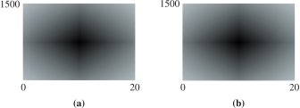

Section 8.1 Polynomial Functions
Subsection Introduction
We have already encountered some examples of polynomial functions. Linear functions,
and quadratic functions
are special cases of polynomial functions. In general, we make the following definition.
Definition 8.1. Polynomial Function.
A polynomial function has the form
where \(a_0\text{,}\) \(a_1\text{,}\) \(a_2\text{,}\) \(\ldots\text{,}\) \(a_n\) are constants and \(a_n \ne 0\text{.}\) The coefficient \(a_n\) of the highest power term is called the lead coefficient.
Some examples of polynomials are
Each of the polynomials above is written in descending powers, which means that the highest-degree term comes first, and the degrees of the terms decrease from largest to smallest. Sometimes it is useful to write a polynomial in ascending powers, so that the degrees of the terms increase. For example, the polynomial \(f(x)\) above would be written as
in ascending powers.
Checkpoint 8.2. QuickCheck 1.
Subsection Products of Polynomials
When we multiply two or more polynomials together, we get another polynomial of higher degree.
Example 8.3.
Compute the products.
\(\displaystyle (x + 2)(5x^3 - 3x^2 + 4)\)
\(\displaystyle (x - 3)(x + 2)(x - 4)\)

Checkpoint 8.4. Practice 1.
In part (a) of the Example above, we multiplied a polynomial of degree one by a polynomial of degree three, and the product was a polynomial of degree four. In the Example part (b), the product of three first-degree polynomials is a third-degree polynomial.
Degree of a Product.
The degree of a product of non-zero polynomials is the sum of the degrees of the factors. That is:
If \(P(x)\) has degree \(m\) and \(Q(x)\) has degree \(n\text{,}\) then their product \(P(x)Q(x)\) has degree \(m+n\text{.}\)
Checkpoint 8.5. QuickCheck 2.
Example 8.6.
Let \(P(x) = 5x^4 - 2x^3 + 6x^2 - x + 2\text{,}\) and
What is the degree of their product? What is the coefficient of the lead term?
Find the coefficient of the \(x^3\)-term of the product.
The degree of \(P\) is 4, and the degree of \(Q\) is 3, so the degree of their product is \(4 + 3 = 7\text{.}\) The only degree 7 term of the product is \((5x^4)(3x^3) = 15x^7\text{,}\) which has coefficient 15.
-
In the product, each term of \(P(x)\) is multiplied by each term of \(Q(x)\text{.}\) We get degree 3 terms by multiplying together terms of degree 0 and 3, or 1 and 2. For these polynomials, the possible combinations are:
\(P(x)\) \(Q(x)\) Product \(2\) \(3x^3\) \(6x^3\) \(-2x^3\) \(3\) \(-6x^3\) \(-x\) \(-4x^2\) \(4x^3\) \(6x^2\) \(5x\) \(30x^3\) The sum of the third-degree terms of the product is \(34x^3\text{,}\) with coefficient 34.
Checkpoint 8.7. Practice 2.
Find the coefficient of the fourth-degree term of the product of \(f(x) = 2x^6 + 2x^4 - x^3 + 5x^2 + 1\) and \(g(x) = x^5 - 3x^4 + 2x^3 + x^2 - 4x - 2\text{.}\)
Answer:
\(2\)
\(2\) is the coefficient of the \(x^4\) term in the product.
To compute the fourth-degree term in the product, we multiply a term of \(f(x)\) of degree 4, 3, 2, or 0 by a term of \(g(x)\) of degree 0, 1, 2, or 4 respectively. We add those four products of terms:
So the fourth-degree term in the product is \(2x^4\text{,}\) and the coefficient is \(2\text{.}\)
Subsection Special Products
Recall the following special products involving quadratic expressions.
Special Products of Binomials.
There are also special products resulting in cubic polynomials. In the Homework problems, you will be asked to verify the following products.
Cube of a Binomial.
\(\displaystyle \blert{(x + y)^3 = x^3 + 3x^2y + 3xy^2 + y^3}\)
\(\displaystyle \blert{(x - y)^3 = x^3 - 3x^2y + 3xy^2 - y^3}\)
If you become familiar with these general forms, you can use them as patterns to find specific examples of such products.
Example 8.8.
Write \((2w - 3)^3\) as a polynomial.
Use product 2 above, with \(x\) replaced by \(\alert{2w}\) and \(y\) replaced by \(\blert{3}\text{.}\)
Of course, we can also expand the product in Example 8.8 simply by polynomial multiplication and arrive at the same answer.
Checkpoint 8.9. Practice 3.
Checkpoint 8.10. QuickCheck 3.
Fill in the blanks.
The coefficient of the highest power term of a polynomial is called the
discriminant
lead coefficient
The largest exponent in a polynomial is called the
degree
logarithm
If the degrees of the terms decrease from largest to smallest, the polynomial is written in
ascending powers
descending powers
The degree of a product of two cubic polynomials is .
Subsection Factoring Cubics
Another pair of products is useful for factoring cubic polynomials. In the Homework problems, you will be asked to verify the following products:
Viewing these products from right to left, we have the following special factorizations for the sum and difference of two cubes.
Factoring the Sum or Difference of Two Cubes.
\(\displaystyle \blert{x^3 + y^3 = (x + y)(x^2 - xy + y^2)}\)
\(\displaystyle \blert{x^3 - y^3 = (x - y)(x^2 + xy + y^2)}\)
When we recognize a polynomial as a sum or difference of two perfect cubes, we then identify the two cubed expressions and apply the formula.
Example 8.11.
Factor each polynomial.
\(\displaystyle 8a^3 + b^3\)
\(\displaystyle 1 - 27h^6\)
-
This polynomial is a sum of two cubes. The cubed expressions are \(2a\text{,}\) because \((2a)^3 = 8a^3\text{,}\) and \(b\text{.}\) Use formula 1 as a pattern, replacing \(x\) with \(\alert{2a}\text{,}\) and \(y\) with \(\blert{b}\text{.}\)
\begin{align*} x^3 + y^3 \amp= (x + y) (x^2 - xy + y^2)\\ (\alert{2a})3 + \blert{b}3 \amp= (\alert{2a} + \blert{b}) ((\alert{2a})^2 - (\alert{2a})\blert{b} + \blert{b}^2) \amp\amp \blert{\text{Simplify.}}\\ \amp= (2a + b) (4a^2 - 2ab + b^2) \end{align*} -
This polynomial is a difference of two cubes. The cubed expressions are \(1\text{,}\) because \(1^3 = 1\text{,}\) and \(3h^2\text{,}\) because \((3h^2)^3 = 27h^6\text{.}\) Use formula 2 above as a pattern, replacing \(x\) by \(\alert{1}\text{,}\) and \(y\) by \(\blert{3h^2}\text{:}\)
\begin{align*} x^3 - y^3 \amp= (x - y) (x^2 + xy + y^2)\\ \alert{1}^3 - (\blert{3h^2})^3 \amp= (\alert{1} - \blert{3h^2})(\alert{1}^2 + \alert{1}(\blert{3h^2}) + (\blert{3h^2})^2)\amp\amp \blert{\text{Simplify.}}\\ \amp= (1 - 3h^2)(1 + 3h^2 + 9 h^4) \end{align*}
Checkpoint 8.12. Practice 4.
Checkpoint 8.13. QuickCheck 4.
True or False.
We cannot factor the sum of two squares.
True
False
We cannot factor the sum of two cubes.
True
False
\((x+y)^3 = x^3 + y^3\)
True
False
To factor \(a^3-b^3\text{,}\) we must first identify \(a\) and \(b\text{.}\)
True
False
Subsection Modeling with Polynomials
Polynomials model many variable relationships, including volume and surface area.
Example 8.14.
A closed box has a square base of length and width \(x\) inches and a height of 8 inches, as shown at right.
Write a polynomial function \(S(x)\) that gives the surface area of the box in terms of the dimensions of the base.
What is the surface area of a box of length and width 18 inches?
-
The surface area of a box is the sum of the areas of its six faces,
\begin{equation*} S = 2lh + 2wh + 2lw \end{equation*}Substituting \(x\) for \(l\) and \(w\text{,}\) and 8 for \(h\) gives us
\begin{equation*} S(x) = 2(8)x + 2(8)x + 2x^2 = 2x^2 + 32x \end{equation*} -
We evaluate the polynomial for \(x = 18\) to find
\begin{equation*} S(18) = 2(18)^2 + 32(18) = 1224 \text{ square inches} \end{equation*}
Checkpoint 8.15. Practice 5.
An empty reflecting pool is \(3\) feet deep. It is \(8\) feet longer than it is wide, as illustrated above.
-
Write a polynomial function \(S(x)\) that gives the surface area of the empty pool.
\(S(x)=\)
-
Write a polynomial function \(V(x)\) for the volume of the pool.
\(V(x)=\)
Cubic polynomials are often used in economics to model cost functions. The cost of producing \(x\) items is an increasing function of \(x\text{,}\) but its rate of increase is usually not constant.
Example 8.16.
Pegasus Printing, Ltd. is launching a new magazine. The cost of printing \(x\) thousand copies is given by
What are the fixed costs, that is, the costs incurred before any copies are printed?
-
Graph the cost function in the window below and describe the graph.
\begin{align*} \text{Xmin} \amp = 0 \amp\amp \text{Xmax} = 20\\ \text{Ymin} \amp = 0 \amp\amp \text{Ymax} = 1500 \end{align*} How many copies can be printed for $1200?
What does the concavity of the graph tell you about the cost function?
Fixed costs are given by \(C(0) = 250\text{,}\) or $250. The fixed costs include expenses like utility bills that must be paid even if no magazines are produced.
-
The graph is shown in figure (a). It is increasing from a vertical intercept of 250. The graph is concave down for \(x \lt 8\) approximately, and concave up for \(x\gt 8\text{.}\)
 -
We must solve the equation
\begin{equation*} x^3 - 24x^2 + 195x + 250 = 1200 \end{equation*}We will solve the equation graphically, as shown in figure (b). Graph \(y = 1200\) along with the cost function, and use the intersect command to find the intersection point of the graphs, \((15.319, 1200)\text{.}\) \(C(x) = 1200\) when \(x\) is about 15.319, so 15,319 copies can be printed for $1200.
Although the cost is always increasing, it increases very slowly from about \(x = 5\) to about \(x = 11\text{.}\) The flattening of the graph in this interval is a result of economy of scale: By buying supplies in bulk and using time efficiently, the cost per magazine can be minimized. However, if the production level is too large, costs begin to rise rapidly again.
In Example 8.16c, we solved a cubic equation graphically. There is a cubic formula, analogous to the quadratic formula, that allows us to solve cubic equations algebraically, but it is complicated and not often used.
Cubic polynomials are also used to model smooth curves connecting given points. Such a curve is called a cubic spline.
Checkpoint 8.17. Practice 6.
Leon is flying his plane to Au Gres, Michigan. He maintains a constant altitude until he passes over a marker just outside the neighboring town of Omer, when he begins his descent for landing. During the descent, his altitude, in feet, is given by
where \(x\) is the number of miles Leon has traveled since passing over the marker in Omer.
-
What is Leon’s altitude when he begins his descent?
ft
-
Graph \(A(x)\) in the window
\begin{equation*} \begin{aligned} \text{Xmin} \amp = 0 \amp\amp \text{Xmax} = 5\\ \text{Ymin} \amp = 0 \amp\amp \text{Ymax} = 8000 \end{aligned} \end{equation*} -
Use the Trace feature to discover how far from Omer Leon will travel before landing. (In other words, how far is Au Gres from Omer?)
mi
-
Verify your answer to part (c) algebraically.
\(A(5)=\)
Graph for part (b)

Checkpoint 8.18. QuickCheck 5.
Fill in the blanks.
We find the surface area of an object by calculating the area of each face and then
adding
averaging
folding
multiplying
In economics,
cubic polynomials
decreasing lines
demand curves
inverse-square functions
The flattening of a cost function in its midrange is a result of
consumer surplus
economy of scale
inflation
measurement error
A smooth curve connecting given points by cubic polynomials is called a
cubic spline
elastic demand
a catenary
an ogive
Exercises Problem Set 8.1
Warm Up
1.
Complete the formulas for the special products of quadratic polynomials.
\(\displaystyle (a+b)^2 = \)
\(\displaystyle (a-b)^2 = \)
2.
Factor if possible.
\(\displaystyle a^2-b^2\)
\(\displaystyle a^2+b^2\)
3.
Use the formulas to factor the polynomials, if possible.
\(\displaystyle x^2-14x+49\)
\(\displaystyle x^2+64\)
\(\displaystyle x^2+6x+9\)
\(\displaystyle x^2-64\)
4.
Use the formulas to write down the products without multiplying:
\(\displaystyle (5x-6y)^2\)
\(\displaystyle (2x^3+y^5)^2\)
\(\displaystyle (3x-8y^2)(3x+8y^2)\)
\(\displaystyle (x^2+y^2)^2\)
Skills Practice
5.
Which of the following are polynomials? If it is not a polynomial, explain why not.
\(\displaystyle 5x^4-3x^2\)
\(\displaystyle 3x+1+\dfrac{2}{x^2}\)
\(\displaystyle \dfrac{1}{2a^2+5a-6}\)
\(\displaystyle \dfrac{2}{3}t^2+\dfrac{1}{4}t^3+\dfrac{5}{8}\)
6.
Give the degree of each polynomial.
\(\displaystyle x^2+4x-\dfrac{1}{4}\)
\(\displaystyle y-2.8y^7\)
\(\displaystyle \dfrac{z}{4}-3z^4+4z^3\)
7.
Write each polynomial in descending powers of \(x\text{.}\)
\(\displaystyle x-1.9x^3+6.4\)
\(\displaystyle 6xy-2x^2+2y^3\)
8.
Add or subtract the polynomials.
\(\displaystyle (2y^3-4y^2-y)+(6y^2+2y+1)\)
\(\displaystyle (5x^3+3x^2-4x+8)-(2x^3-4x-3)\)
9.
Without performing the multiplication, give the degree of each product.
\(\displaystyle (x^2-4)(3x^2-6x+2)\)
\(\displaystyle (x-3)(2x-5)(x^3-x+2)\)
\(\displaystyle (3x^2+2x)(x^3+1)(-2x^2+8)\)
Exercise Group.
For Problems 10 and 11, multiply.
10.
\(\displaystyle (3x-2)(4x^2+x-2)\)
\(\displaystyle (x-2)(x-1)(x-3)\)
11.
\(\displaystyle (2a^2-3a+1)(3a^2+2a-1)\)
\(\displaystyle (y-2)(y+2)(y+4)(y+1)\)
Exercise Group.
For Problems 12 and 13, use the formulas for the cube of a binomial to expand the products.
12.
\(\displaystyle (1+2z)^3\)
\(\displaystyle (1-x^2)^3\)
13.
\(\displaystyle (1+5\sqrt{t})^3\)
\(\displaystyle (1-\dfrac{3}{a})^3\)
Exercise Group.
For Problems 14 and 15, write each product as a polynomial and simplify.
14.
\(\displaystyle (2x + 1)(4x^2 - 2x + 1)\)
\(\displaystyle (3x - 1)(9x^2 + 3x + 1)\)
15.
\(\displaystyle (3a - 2b)(9a^2 + 6ab + 4b^2)\)
\(\displaystyle (2a + 3b)(4a^2 - 6ab + 9b^2)\)
Exercise Group.
For Problems 16 and 21, factor completely.
16.
\(x^3+27\)
17.
\(a^3-8b^3\)
18.
\(x^3y^6-1\)
19.
\(27a^3+64b^3\)
20.
\(125a^3b^3-1\)
21.
\(64t^9+w^6\)
22.
Evaluate each polynomial for \(n=10\text{.}\) Try to do the calculations mentally. What do you notice?
\(\displaystyle 5n^2+6n+7\)
\(\displaystyle 5n^3+n^2+3n+3\)
\(\displaystyle n^3+1\)
\(\displaystyle 8n^4+8n\)
Applications
23.
A large wooden box (without lid) is 3 feet longer than it is wide, and its height is 2 feet shorter than its width.
If the width of the box is \(w\text{,}\) write expressions for its length and its height.
Write a polynomial for the volume of the box.
Write a polynomial for the surface area of the box.
24.
A paper company plans to make boxes without tops from sheets of cardboard 12 inches wide and 16 inches long. The company will cut out four squares of side \(x\) inches from the corners of the sheet and fold up the edges as shown in the figure.

Write expressions in terms of \(x\) for the length, width, and height of the resulting box.
Write a formula for the volume, \(V\text{,}\) of the box as a function of \(x\text{.}\)
What are the largest and smallest reasonable values for \(x\text{?}\)
Make a table of values for \(V(x) \) on its domain.
-
Graph your function \(V\) in the window
\begin{align*} \text{Xmin} \amp = 0 \amp\amp \text{Xmax} = 6\\ \text{Ymin} \amp = 0 \amp\amp \text{Ymax} = 200 \end{align*} Use your graph to find the value of \(x\) that will yield a box with maximum possible volume. What is the maximum possible volume?
25.
A grain silo is built in the shape of a cylinder with a hemisphere on top (see the figure). Write an expression for the volume of the silo in terms of the radius and height of the cylindrical portion of the silo.
If the total height of the silo is five times its radius, write a polynomial function \(V(r)\) in one variable for its volume.

26.
The annual profit, \(P(t)\text{,}\) of the Enviro Company, in thousands of dollars, is given by
where \(t\) is the number of years since 1980, the first year that the company showed a profit.
-
Graph \(P(t)\) in the window
\begin{align*} {\text{Xmin}} \amp = 0 \amp\amp {\text{Xmax}} = 94\\ {\text{Ymin}} \amp = 0 \amp\amp {\text{Ymax}} = 50,000 \end{align*} What was the profit in 1980? In 2000? In 2020?
How did the profit change from 1980 to 1981? From 2000 to 2001? From 2020 to 2021?
During which years did the profit decrease from one year to the next?
27.
A doctor who is treating a heart patient wants to prescribe medication to lower the patient's blood pressure. The body's reaction to this medication is a function of the dose administered. If the patient takes \(x\) milliliters of the medication, his blood pressure should decrease by \(R = f (x)\) points, where
For what values of \(x\) is \(R = 0\text{?}\)
What values of \(x\) make sense for this function? Why?
-
Graph the function in the window
\begin{align*} {\text{Xmin}} \amp = 0 \amp\amp {\text{Xmax}} = 10\\ {\text{Ymin}} \amp = 0 \amp\amp {\text{Ymax}} = 40 \end{align*} How much should the patient's blood pressure drop if he takes 2 milliliters of medication?
What is the maximum drop in blood pressure that can be achieved with this medication?
There may be risks associated with a large change in blood pressure. How many milliliters of the medication should be administered to produce half the maximum possible drop in blood pressure?
28.
The water level (in feet) at a harbor is approximated by the polynomial
where \(t\) is the number of hours since the high tide. The approximation is valid for \(-4 \le t \le 4\text{.}\) (A negative value of \(t\) corresponds to a number of hours before the high tide.)
Graph the polynomial for \(-4 \le t \le 4\text{.}\)
What is the water level at high tide?
What is the water level 3 hours before high tide?
When is the water level below 8 feet?
When is the water level above 7 feet?
29.
During an earthquake, Nordhoff Street split in two, and one section shifted up several centimeters. Engineers created a ramp from the lower section to the upper section. In the coordinate system shown in the figure below, the ramp is part of the graph of

By how much did the upper section of the street shift during the earthquake?
What is the horizontal distance from the bottom of the ramp to the raised part of the street?
30.
Expand each expression by removing parentheses. What do you notice?
\(\displaystyle x[x(x+3)+4]+1\)
\(\displaystyle x(x[x(x-7)-5]+8)-3\)
Evaluate each expression for \(x=2\text{.}\) Can you do this mentally? Is it easier to evaluate the expression before or after expanding it?
Use a calculator to evaluate each expression for \(x=0.8\text{.}\)
31.
Find the first three terms of the product in ascending powers. (Do not compute the entire product!)
\(\displaystyle (2 - x + 3x^2)(3 + 2x - x^2 + 2x^4)\)
\(\displaystyle (1 - 2x^2 - x^4)(4 + x^2 - 2x^4)\)
32.
Find the indicated term in each product. (Do not compute the entire product!)
\((4 + 2x - x^2)(2 - 3x + 2x^2)\text{;}\) \(x^2\)
\((3x + x^3 - 7x^5)(1 + 4x - 3x^2)\text{;}\) \(x^3\)
33.
Verify the formula for factoring the sum of two cubes:
34.
Verify the formula for factoring the difference of two cubes: